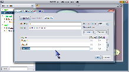
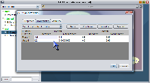

Once you have designed the structure of a Bayesian network, the next step is to quantitatively define the conditional dependencies between variables. In SamIam, the user can accomplish this by editing a table of conditional probability values for each variable in the belief network. The probability-editing table for a node is part of the node properties dialog window. Show the node properties dialog window either by double-clicking the icon for the node in the network view, or by right-clicking it and selecting the context menu item labeled "Properties." The first tab of the node properties dialog displays editable qualitative information about the node, including the identifier, name, and a list of its discrete states. Additional states can be inserted and removed to change state cardinality. SamIam requires that variable identifiers be unique in the context of one network. This window also displays Genie-specific information about the node, including the probability representation semantics for the node, which can be either CPT or noisy-or, and in the table of states, the target and default flags for each state.
The probability-editing table appears in the tab labeled "Probabilities." This tab contains a title indicating whether the table is a full conditional probability table, a table of noisy-or weights, or a table of sensitivity lock settings. The upper half of the table contains a row for each parent variable. The lower half contains a row for each discrete state of the child variable. Thus, the probability values in each column of the table must sum to 1. You can edit the value of a single parameter in the table by double-clicking the table cell for that entry.
Inserting State  |
 |
The Probabilities tab also
provides some useful functions for working with the probability table. The Resize
button will expand every column of the table to make the probability numbers
fully visible. This can be useful when you would like to inspect a lot of numbers
for which a high decimal precision causes the widths of the numbers themselves
on the screen to overflow the bounds of the table cells that contain them. The
Complement button provides an automatic mathematical
function for calculating the value of one table parameter based on the values
of the other parameters that appear in its column. To use the Complement function,
choose a table column you would like to work with and provide a probability
value for each entry in the column but one. Next, single-click the remaining
entry you have left undefined. You will notice that the column of interest is
now in a selected state, as indicated by the background color of the table cells.
Also, the background color of the table cell containing the selected parameter
itself identifies it in its column. Next, click the Complement
button. The value of the selected parameter will take on the value of the complement
of the remainder of the numbers for that condition (i.e. 1 - sum of other numbers).
The Normalize button provides an automatic mathematical
function for setting the values of all the probability numbers in one column.
To use it, first left-click any table cell in the column you are interested
in normalizing. You will notice that the column is selected. Next, click the
Normalize button. Each number in the column will
be divided by the sum of the column entries. This results in the new sum = 1
for the probability numbers in the normalized column.